<!doctype html><html><head><meta charset="utf-8"><title>Common process UI: reference image, readiness and observed progress</title><style>body{font:16px system-ui;background:#101922;color:#e8f4f7;max-width:1100px;margin:24px auto}section{border:1px solid #647486;padding:18px;margin:16px 0}.pass{border-color:#64bda4}.blocked{border-color:#ee7373}img{max-width:100%}a{color:#7fe0cb}</style></head><body><h1>Common process UI: reference image, readiness and observed progress</h1><p>Served Wright UI with controlled HTTP contracts; no model, MCP or engineering dispatch.</p><p>Overall: blocked</p><h2>Manual repeat</h2><ol><li>Open the isolated workspace. Click Workflows, then Use saved process.</li><li>Enter the Design request. Choose a PNG in Reference image. Check its thumbnail and wait for transfer to finish.</li><li>Click Prepare and check inputs, then Start process. Inspect activity and reported progress.</li><li>Inspect the completed result. Close the working tab and reopen its saved link.</li></ol><section class="pass"><h2>Normal workspace and accepted process · pass</h2><p>The accepted process opens in the existing editor.</p><p>The normal workspace editor opens; no run is submitted.</p><p><a class="image-button" href="screenshots/raw/S01.png" onclick="event.preventDefault();document.getElementById('full-image').src=this.href;document.getElementById('image-dialog').showModal()"></a></p><p><a class="image-button" href="screenshots/annotated/S01.png" onclick="event.preventDefault();document.getElementById('full-image').src=this.href;document.getElementById('image-dialog').showModal()"></a></p><p><a class="image-button" href="screenshots/raw/S01-result.png" onclick="event.preventDefault();document.getElementById('full-image').src=this.href;document.getElementById('image-dialog').showModal()"></a></p></section><section class="pass"><h2>Common working tab · pass</h2><p>Inputs and preparation controls open in a workspace tab.</p><p>The common view shows Design request and Reference image; starting is disabled.</p><p><a class="image-button" href="screenshots/raw/S02.png" onclick="event.preventDefault();document.getElementById('full-image').src=this.href;document.getElementById('image-dialog').showModal()">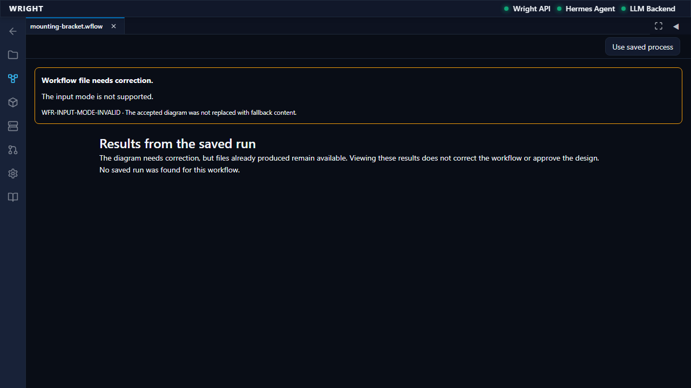</a></p><p><a class="image-button" href="screenshots/annotated/S02.png" onclick="event.preventDefault();document.getElementById('full-image').src=this.href;document.getElementById('image-dialog').showModal()">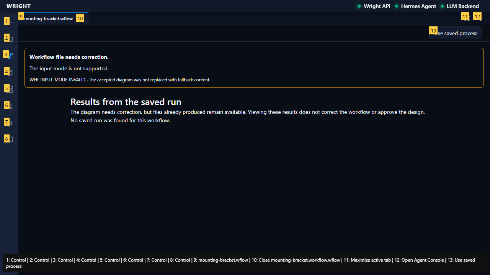</a></p><p><a class="image-button" href="screenshots/raw/S02-result.png" onclick="event.preventDefault();document.getElementById('full-image').src=this.href;document.getElementById('image-dialog').showModal()">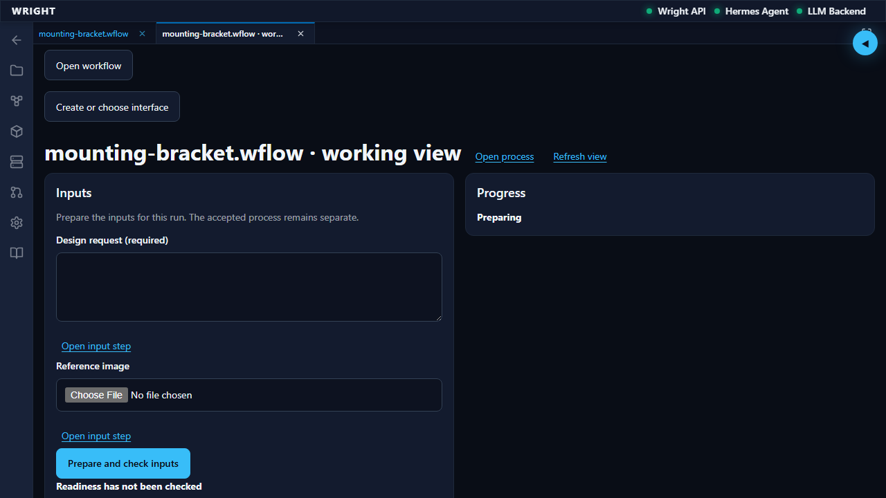</a></p></section><section class="pass"><h2>Provide the design request · pass</h2><p>The draft is entered without starting or editing source.</p><p>The typed draft stays in the working view and no dispatch occurs.</p><p><a class="image-button" href="screenshots/raw/S03.png" onclick="event.preventDefault();document.getElementById('full-image').src=this.href;document.getElementById('image-dialog').showModal()"></a></p><p><a class="image-button" href="screenshots/annotated/S03.png" onclick="event.preventDefault();document.getElementById('full-image').src=this.href;document.getElementById('image-dialog').showModal()">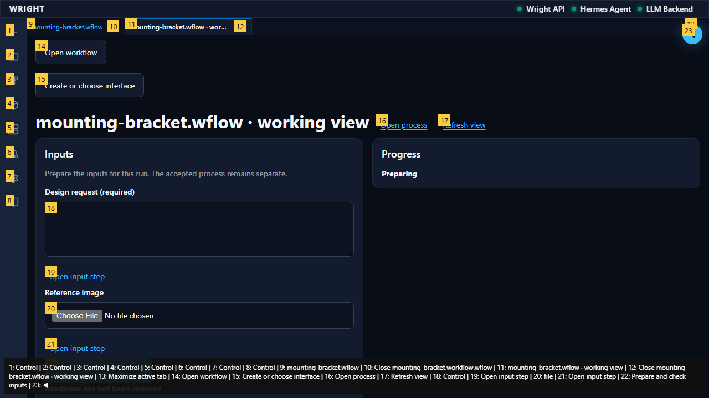</a></p><p><a class="image-button" href="screenshots/raw/S03-result.png" onclick="event.preventDefault();document.getElementById('full-image').src=this.href;document.getElementById('image-dialog').showModal()">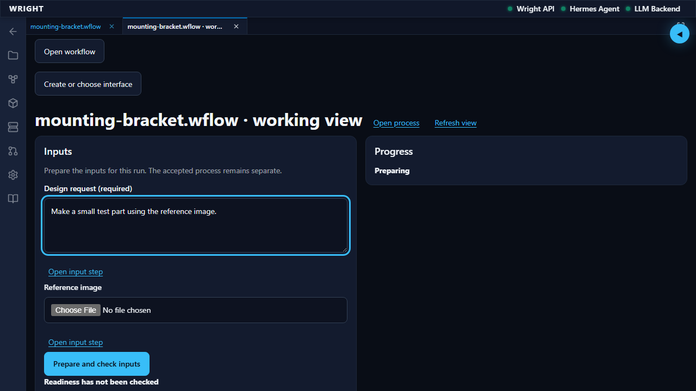</a></p></section><section class="pass"><h2>Uploaded bitmap and pending transfer · pass</h2><p>A decoded thumbnail and file-transfer progress are visible; preparation/start remain disabled.</p><p>The 96 by 96 bitmap decodes, Preparing file is visible and no process can start while upload is pending.</p><p><a class="image-button" href="screenshots/raw/S04.png" onclick="event.preventDefault();document.getElementById('full-image').src=this.href;document.getElementById('image-dialog').showModal()"></a></p><p><a class="image-button" href="screenshots/annotated/S04.png" onclick="event.preventDefault();document.getElementById('full-image').src=this.href;document.getElementById('image-dialog').showModal()">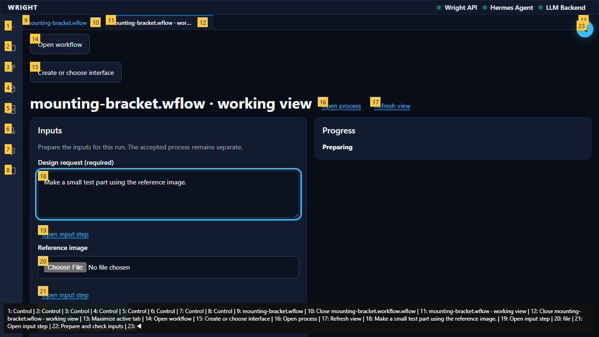</a></p><p><a class="image-button" href="screenshots/raw/S04-result.png" onclick="event.preventDefault();document.getElementById('full-image').src=this.href;document.getElementById('image-dialog').showModal()">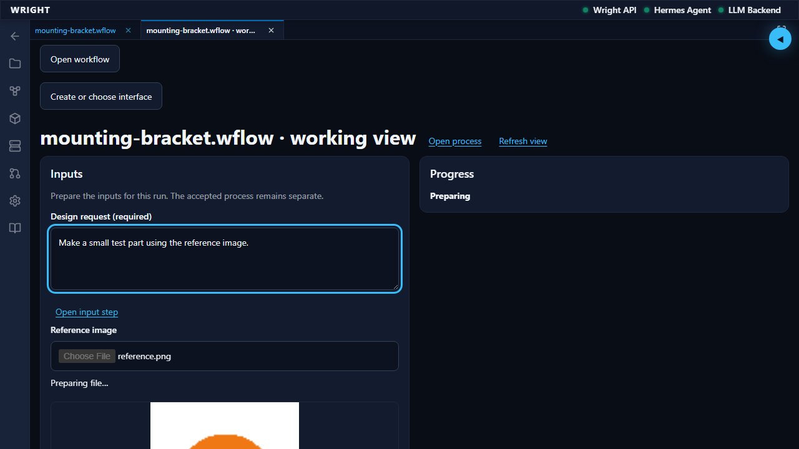</a></p></section><section class="pass"><h2>Transfer finishes before preparation · pass</h2><p>Preparation becomes available after the scoped upload reply.</p><p>The upload&#39;s original SHA-256 and process scope are retained; the thumbnail stays visible.</p><p><a class="image-button" href="screenshots/raw/S05.png" onclick="event.preventDefault();document.getElementById('full-image').src=this.href;document.getElementById('image-dialog').showModal()"></a></p><p><a class="image-button" href="screenshots/annotated/S05.png" onclick="event.preventDefault();document.getElementById('full-image').src=this.href;document.getElementById('image-dialog').showModal()">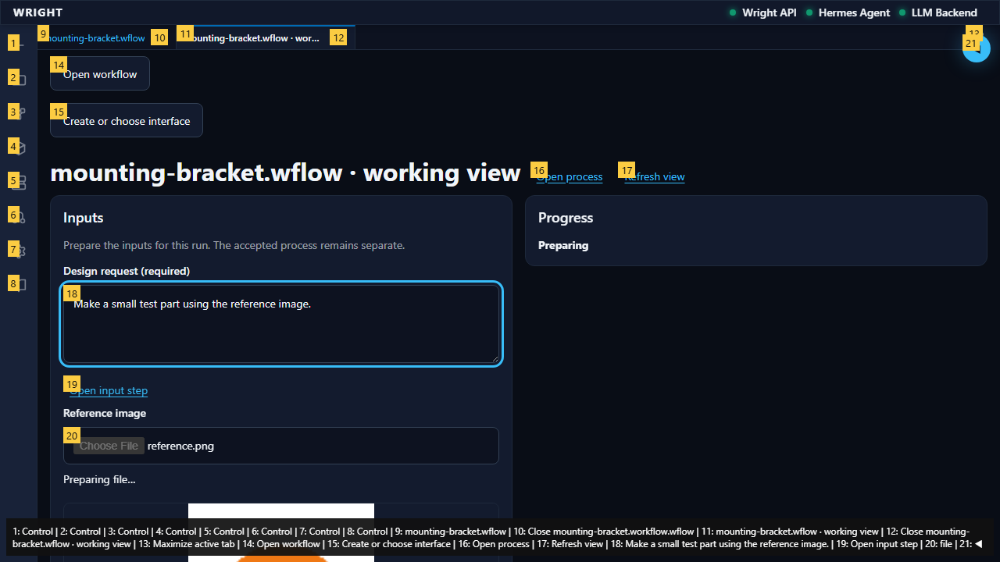</a></p><p><a class="image-button" href="screenshots/raw/S05-result.png" onclick="event.preventDefault();document.getElementById('full-image').src=this.href;document.getElementById('image-dialog').showModal()"></a></p></section><section class="blocked"><h2>Check all supplied inputs · blocked</h2><p>The exact prompt and file binding are prepared, then start becomes permitted.</p><p>Error: expect(received).toMatchObject(expected)

Matcher error: received value must be a non-null object

Received has value: undefined</p><p><a class="image-button" href="screenshots/raw/S06.png" onclick="event.preventDefault();document.getElementById('full-image').src=this.href;document.getElementById('image-dialog').showModal()">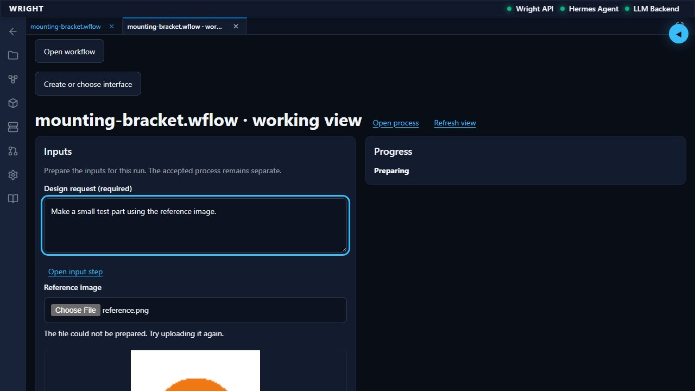</a></p><p><a class="image-button" href="screenshots/annotated/S06.png" onclick="event.preventDefault();document.getElementById('full-image').src=this.href;document.getElementById('image-dialog').showModal()">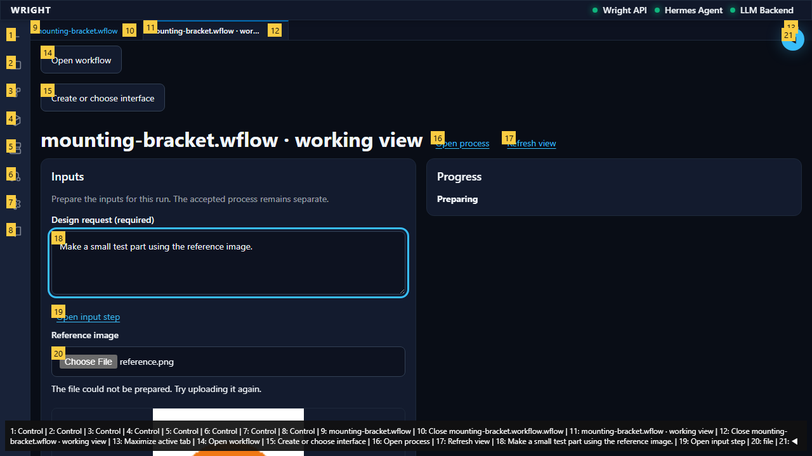</a></p><p><a class="image-button" href="screenshots/raw/S06-result.png" onclick="event.preventDefault();document.getElementById('full-image').src=this.href;document.getElementById('image-dialog').showModal()">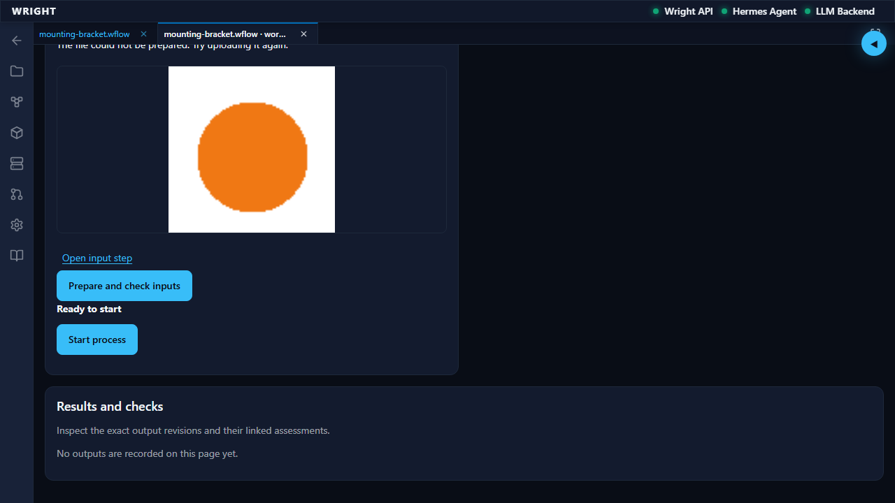</a></p></section><dialog id="image-dialog"><button onclick="document.getElementById('image-dialog').close()">Close</button></dialog></body></html>